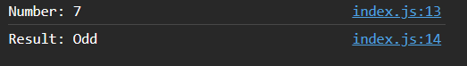
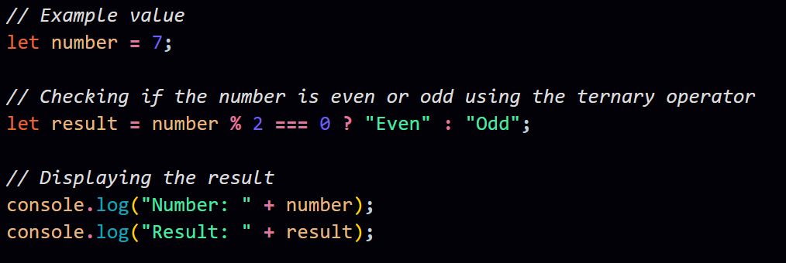

Q. Explain the usage of ternary operator with syntax and write a program to check whether the number is even or odd using the ternary operator.
Ans.
The ternary operator, also known as the conditional operator, provides a concise way to write a simple conditional (if-else) statement in a single line. Its syntax is as follows:
- If the 'condition' is true, the 'expressionIfTrue' is evaluated.
- If the 'condition' is false, the 'expressionIfFalse' is evaluated.
Now, let's write a JavaScript program to check whether a number is even or odd using the ternary operator:
In this program:
- The example value for the number is set to 7.
- The ternary operator is used to check if the number is even or odd. The condition number % 2 === 0 checks if the remainder when dividing by 2 is zero.
- If the condition is true, the string "Even" is assigned to the variable result; otherwise, the string "Odd" is assigned.
- The result is displayed using console.log.